2. Travel through the North of Spain
August 18 to 22, 2021
Day 4, see Asturias in 1 day
August 21, 2021

I leave Lorenzana very early and drive along the A8, the northern highway towards Asturias. Just as I pass through Ribadeo I enter Asturias.
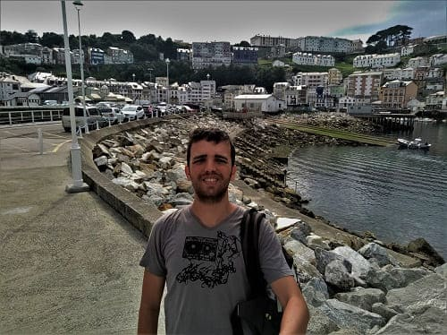
I visit Luarca, one of the most beautiful fishing villages in Asturias along with Cudillero. It is known as "the white villa of the Costa Verde" since the color of its houses contrasts greatly with the greenish blue of the sea. Apart from its beautiful streets, and its old buildings, we have a very good viewpoint, and tremendous views from the lighthouse. There are also two very large public car parks on the outskirts of town, one with several floors and the other in a very large area.
It is also the birthplace of the Nobel Prize winner in medicine Severo Ochoa , so we can visit his house that is accompanied by a sculpture in his honor. Nearby is a medieval postcard bridge to cross to the other, more mountainous part. It has 7 bridges in total with many and the medieval bridge is known as the "kiss bridge" because of a story behind it.
Going up the mountain we find the Chano viewpoint where you can enjoy the best views of the city. In the background on the right you can see the beautiful Luarca lighthouse next to the hermitage of Nuestra Señora la Blanca and the cemetery. From above you can also see different Indian houses, which are the houses that were built by people who immigrated to America to make their fortune and then returned spending part of their capital to build beautiful residences. The best known are Villa Excelsor, Rosario, La Barrera and La Argentina, which are currently restaurants or hotels.
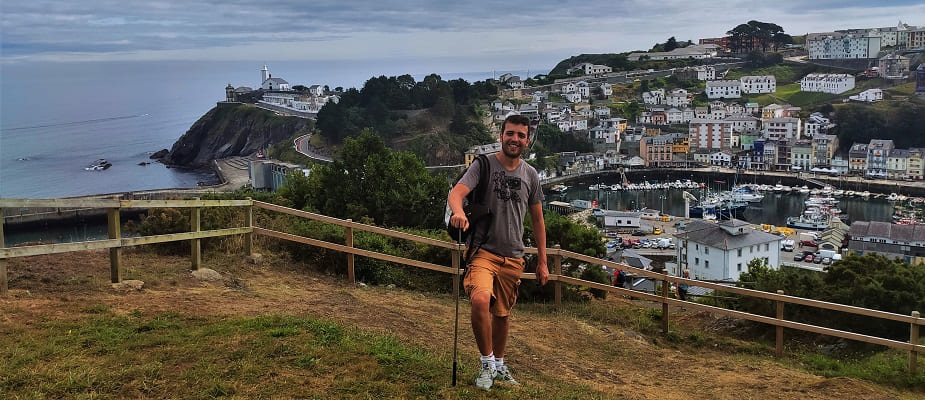
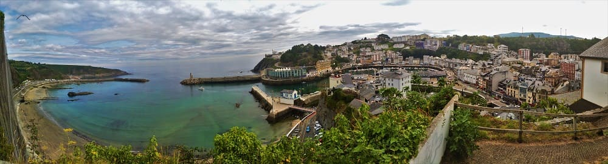
I decided to visit towns in the interior of Asturias since I already knew Avilés. Take the N-634 until you reach Salas, a town in the interior of Asturias.
This town's main heritage is its Gothic collegiate church of Santa María la Mayor from the end of the 16th century, where the Baroque altarpiece stands out and, above all, the 16th-century alabaster mausoleum of the Italian artist who worked for the king Felipe II in the Escorial. The remains of the Valdés Salas family rest in the mausoleum, whose member was the founder of the University of Oviedo, and politician of those times.
On the other hand, the main square ends the Valdés Salas palace, which uses a tribute tower from the time of the reconquest and the gate of the wall that the town must have had. This palace today functions as a hotel restaurant. The road is not good and most of the time do not exceed the speed of 70 km/h, not passing fourth gear at any time. Road with many curves and all the time in the shade covered by trees.
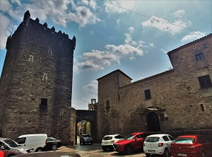
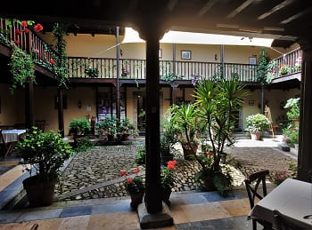
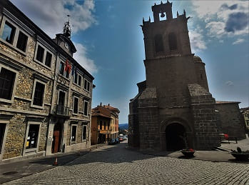
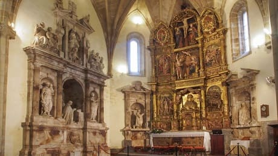
After Salas I stopped at Cornellana and saw the ruins of an old building, the monastery of El Salvador. This monastery is the key to the entire population of the surrounding villages. It dates from the 11th century, in the times of King Bermudo II of León. In those times the reconquest was only in the initial phase of the north of the peninsula. The monastery is mainly Romanesque in style and its exterior hardly changed over time, however in the 16th century the monastery became part of the Benedictine congregation of Valladolid and many aspects of the interior would be changed. During the French invasion the decline of the same would begin, being damaged by the French and although later the monks returned, the buildings attached to the monastery would be sold. The monastery would be partly repaired after the civil war but it has been abandoned for several years and it was not until the beginning of the 21st century that people began to want to restore the building to turn it into a hub that attracts tourists to the area.
In that small stop, take the opportunity to eat in front of the monastery.
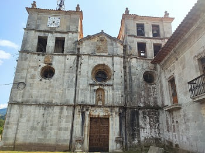
 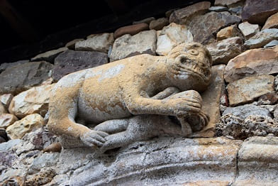
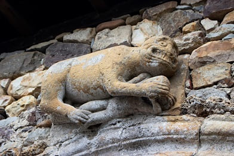

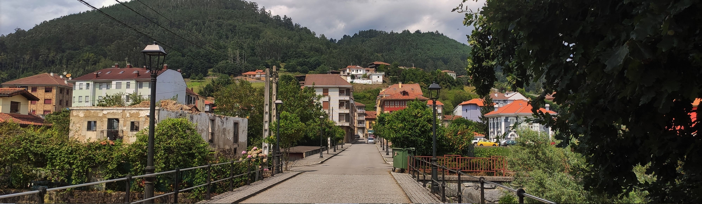
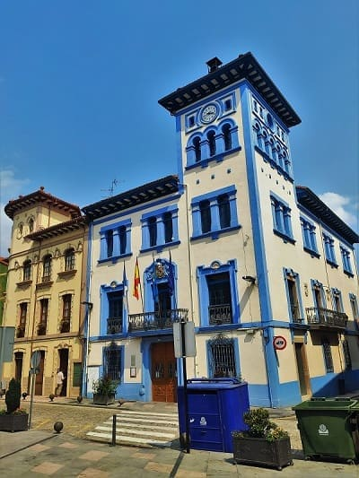
Then I went to
Grado, one of the towns that surprised me on this trip, with its colorful houses, its town hall and its Plaza Mayor, which can be seen in the following image.
Thanks to the person in charge of the tourist office, I was able to see a building little known by the people who travel to this town. This is
the Chapel of Sorrows, which can be seen in the photograph that was connected to the palace of the same noble family, that of the Marquises of Valdecarzana.
The palace of the Miranda family underwent a large extension in the Baroque style in the last third of the 17th century, probably when the title of the Marquesate of Valdecarzana had already been received. Another reform was the one that coincided with the construction of the chapel of Nuestra Señora de los Dolores between 1713 and 1716 when the eastern façade was made and a connection with the chapel's gallery was wanted to be made, this cantilevered passageway seems never to have been built.
The palace building had an oratory in one of its rooms for the devotion of the family, a common fact in the houses of the nobility that did not have a chapel with its own building. This must have been a determining reason for wanting to compare with other families, which made the third Marquis of Valdezarzana decide to build the chapel, close to his house-palace in Grado, occupying part of the land destined for the family garden and close to the church. Romanesque parish church of San Pedro.
In the town there are many palaces and mansions from the 19th and 20th centuries, but the ones that stand out the most are those of the Miranda family and those around the Plaza Mayor:
the Casares palace, the Marquesa palace de Fontela, the house of the Arches, etc.. There are also a series of Indian palaces, large colonial-style houses of emigrants who returned to their hometown, which are located on the road that surrounds the town, some of which have been converted into hotels and hostels.
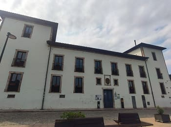
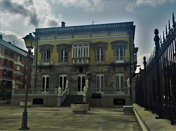
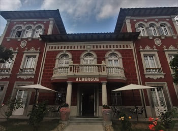
After passing through this town, I will head towards
Oviedo, which was one of the first cities with history that I visited as a child, in high school. I will start with the oldest monuments chronologically, such as the pre-Romanesque churches of Oviedo, the most important of which are located on the outskirts of the city. To this we must add a fourth church that is 14 km from the capital. This church is
San Pedro de Nora, which was built in the 9th century. In addition, Asturias has 2 other churches of this style, such as
the church of Santa Cristina de Lena on the outskirts of Pola de Lena and the church of Salvador de Valdediós, near Villaviciosa to the east of Oviedo.
First visit
the churches of Santa María del Naranco and the church of San Miguel de Lillo at the top of the city. I was also able to see how the view has changed with the inclusion of that large white building by Calatrava, the Palacio de Congresos, which does a lot of damage to the panorama. From my point of view, it stands out a lot and makes you not pay attention to what is truly important about the view.
These churches are a World Heritage Site and date from the 9th century. They were built in the times of the first Asturian kings, in this case it was Ramiro I, which is why the style, in addition to pre-Romanesque, is called Ramirense. It is said that Santa María del Naranco could also be the personal church of the king's palace. This style is a transition between the Visigothic temples and the Romanesque style.
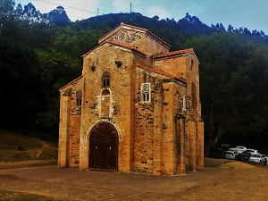
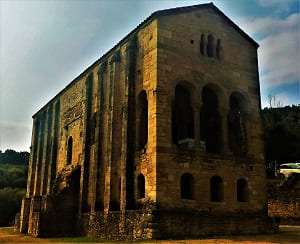
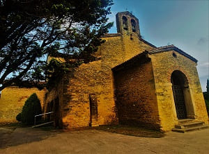
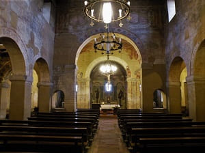
At the end I go down to the city and leave the car very close to the Santuyano park where the third pre-Romanesque church in the city is located,
San Julián de Prados. To see the interior of the churches it is necessary to pay, and its price is around 3 euros. The one in San Julián de Prados is the only one that maintains the original paintings inside.
Continuing along the path, I will arrive at the historic center where the first thing I do is visit
the provincial archaeological museum which is located in the
cloister of the Monastery of San Vicente. This monastery was one of the oldest and one of the first buildings in the city at the end of the Visigothic period. It would be rebuilt several times and today the original Romanesque style barely survives on the exterior. Very close to the museum is
Plaza de Feijoo and the church of Santa María de la Corte, much more modern, from the end of the 16th century. In the following images the building, the cloister from below and the view of the first floor.
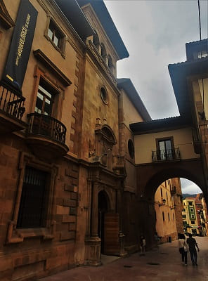
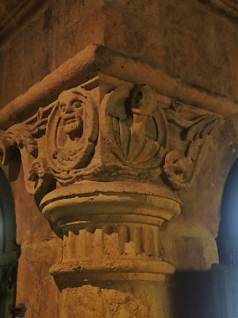
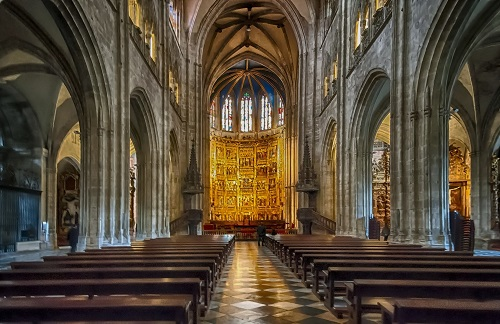
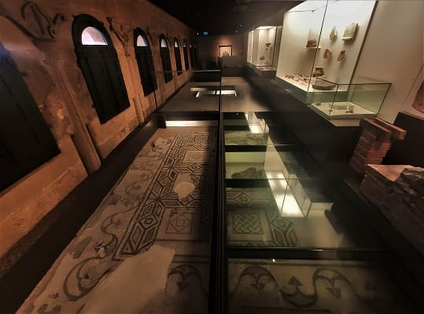
Nearby is the Archbishop's palace, and the episcopal teaching delegation. In the second image
the faculty of psychology in Feijoo square, which was the old building of the monastery of San Vicente.
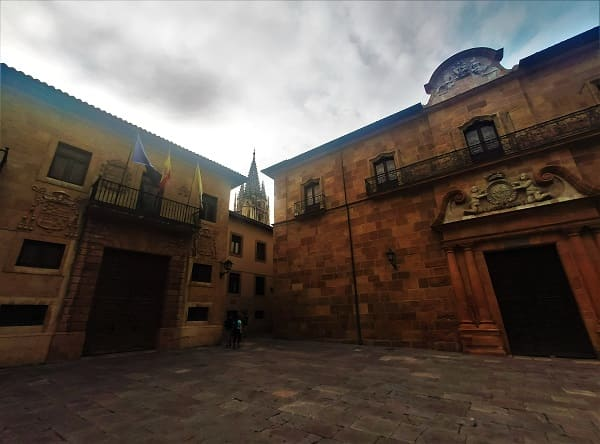
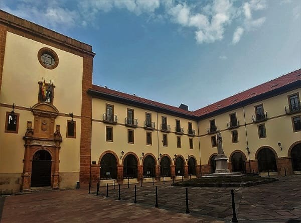
Then I will go to the cathedral, where curiously the day I went there was an exhibition of regional dances that gave a lot of play to that Oviedo of yesteryear.
The Metropolitan Cathedral of El Salvador in Oviedo, is also known as Sancta Ovetensis, due to the relics it contains.
The church is located on the site of the previous pre-Romanesque cathedral from the 9th century, some of whose buildings have survived. For this reason and the length of the construction of the current building, it contains structures of the Pre-Romanesque (Holy Chamber), Romanesque (vaults and apostolate of the Holy Chamber), Gothic (facade, naves and cloister), Renaissance (top of the tower ) and Baroque (Girola, Chapel of the Chaste King and other chapels).
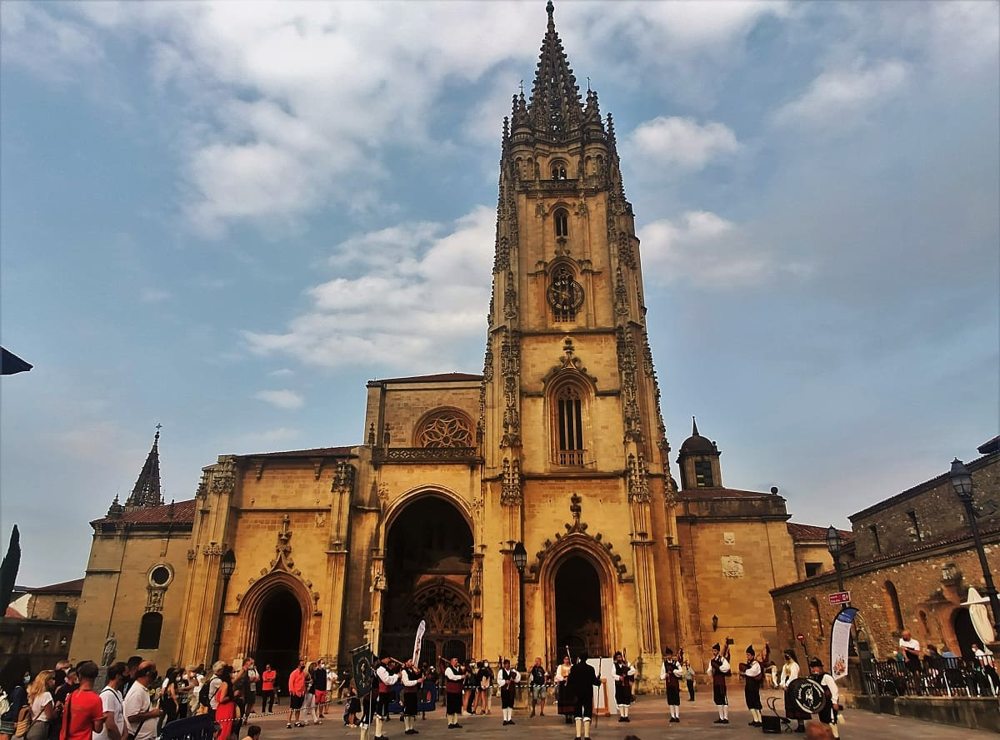
The cloister connects with the crypt of Santa Leocaldia and it is above where the Holy Chamber is located, in which the relics of Asturias are found. The Holy Chamber, from the 9th century, is declared a World Heritage Site by Unesco and houses the cathedral's most precious jewels: the Victoria and Los Angeles crosses, symbols of Asturias and the city of Oviedo respectively, the Caja of the Agates and the Holy Ark, which contains a large number of relics, among which is the Holy Shroud.
Originally it was a pre-Romanesque church to which other churches and clergy offices were added.
The set of churches was made up of several buildings of worship of which we have some documentary references, the monastery of San Vicente, the later one of San Juan Bautista and San Pelayo and, as the main nucleus, the basilicas of San Salvador and Santa María. , which stood until the 18th century, annexed to the previous one as a cemetery space. San Salvador was the main church and quite possibly the king's "own church", while Santa María was dedicated to the funeral liturgy dedicated to Alfonso II and, later, to all the kings of Asturias.
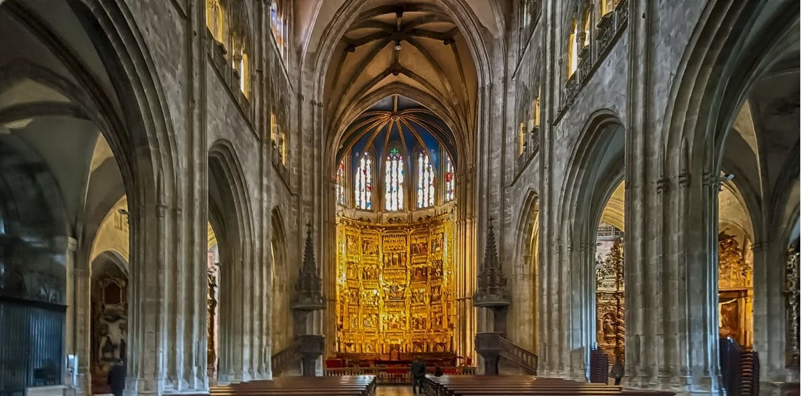
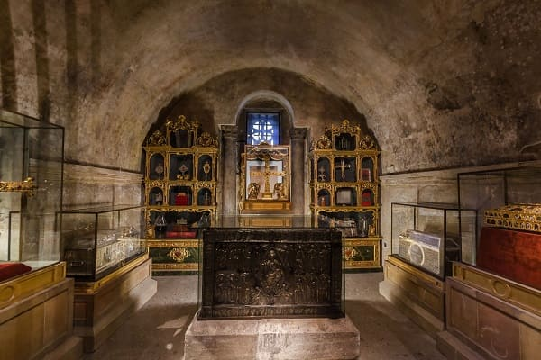
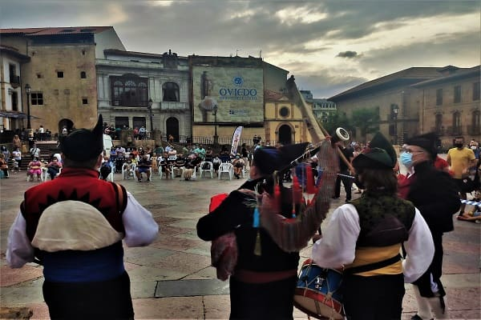
Not far away is the Monastery of San Pelayo, which was ordered to be built from a temple dating from the 9th century and which would have been in the primitive Romanesque style. The building would continue to be remodeled until it was rebuilt in the 17th century with that Baroque, even Herrerian appearance. Here images of both the façade and the cloister.

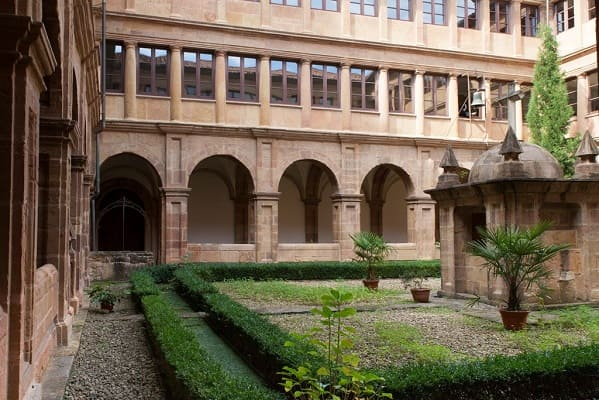
Among the most outstanding palaces in the town are
the Velarde palace, the Valdecarzana palace (in the image), the Camposagrado palace.
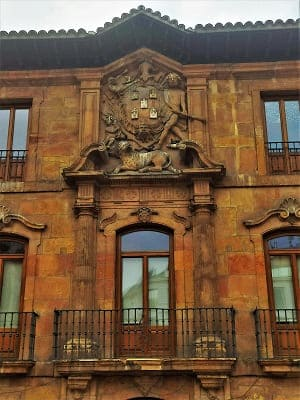
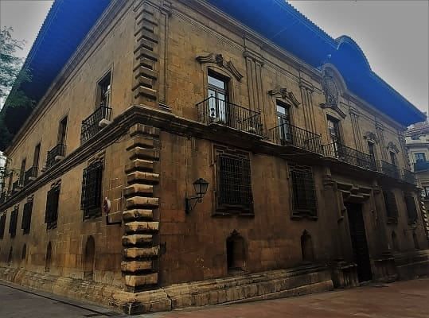
Other important buildings are
the Royal Institute of Asturian Studies and the University of Oviedo and its patio. This university was commissioned, in the 16th century, by Bishop Fernando Valdes Salas, originally from the town of Salas seen above, and for this reason the university wears the heraldic shields of the Valdés house. Also in the image the facade of the museum of fine arts.

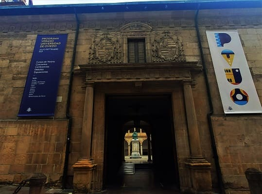
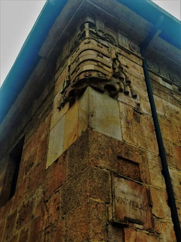
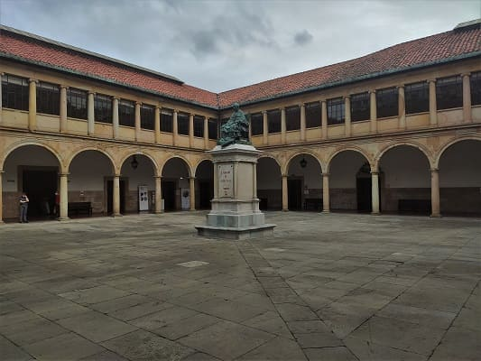
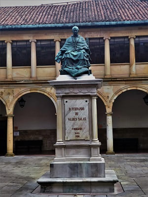
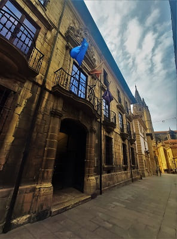
Another relevant space is the
Constitución Square and the city hall, crowned by the 16th-century church of San Isidoro el Real.
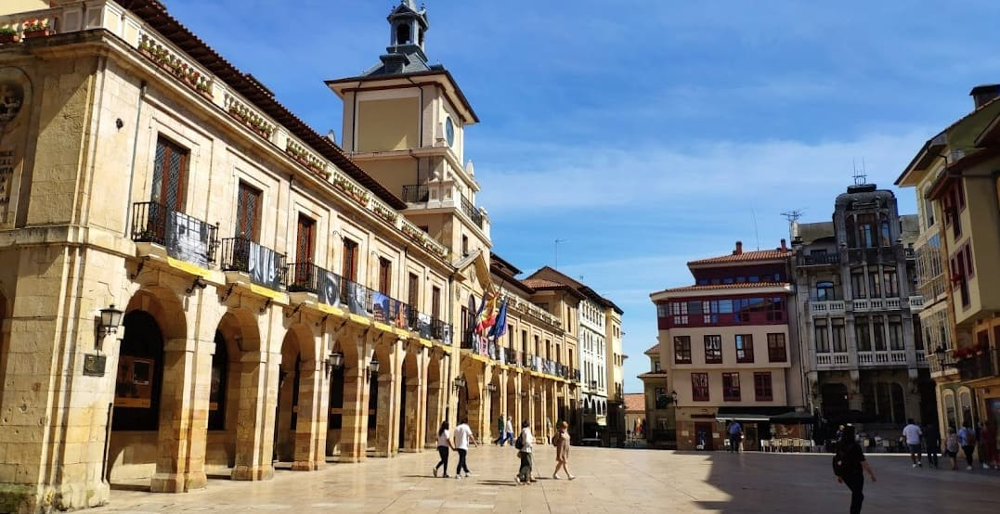
Lastly, I will visit
the Basilica of Saint John which replaces another church of the same name that was next to the cathedral. This basilica is huge and is from the 20th century in an eclectic style, which mixes various architectural styles, especially the Baroque and the modernist.
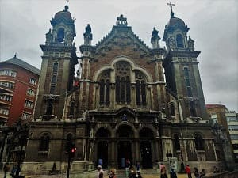
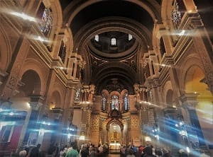
To end a visit to
the Campo de San Francisco, Plaza Escandalera (in the image), the Campoamor theater. In Campo de San Francisco you can find
the original Romanesque arch of the church of San Isidoro as seen in the image, as well as different sculptures and figures such as Mafalda from the 80s comics.
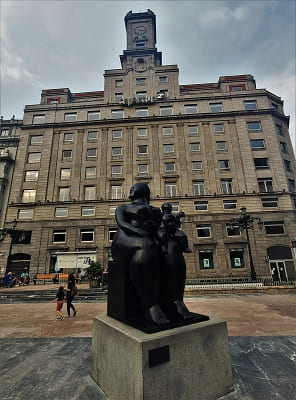
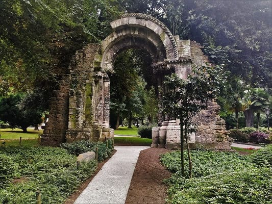
Once I have seen Oviedo, I will stop for 1 hour in
Mieres to take a walk through the old town, and see the most important elements
the high school and the house of culture as well as a pinkish palace > that resemble in the architecture of colonial type.
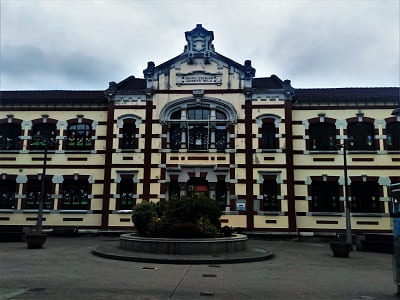
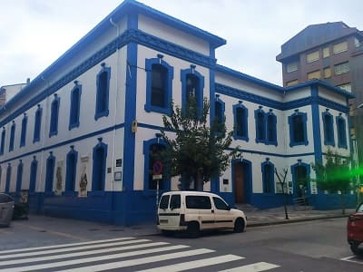

The church of San Juan also has that more typical South American appearance.
I will continue through the toll until I arrive and I will now leave through León to cross the province a bit to the north and shorten, however, the road is not very good since there are many curves but the landscape in case of going during the day is sure to be worth it.
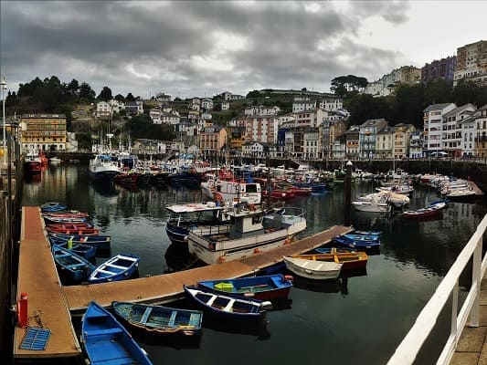
Port and viewpoints.
15
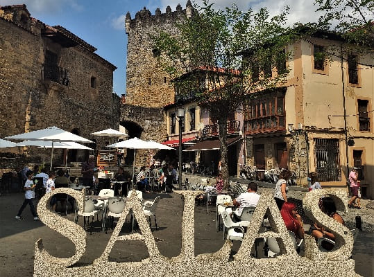
Palace of Valdes Salas, s.XV.
16
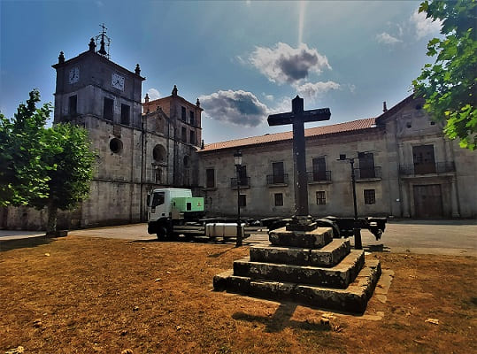
Monastery of San Salvador, s.XI.
17
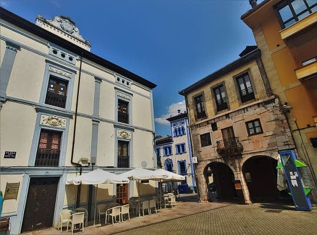
Palaces Fontela and Miranda Valdecarzana, s.XVIII, XV.
18
Cathedral s.XIII and pre-Romanesque churches, s.IX.
19
Church of San Juan Bautista and Plaza Mayor, s.XX.
20
Day 5, from Albares to Guadalajara, important towns on the A6 (CLICK to continue)
August 22, 2021

![[Valid RSS]](https://www.onepointsync.com/wp-content/uploads/2016/08/valid-rss-rogers.png "Validate my RSS feed")